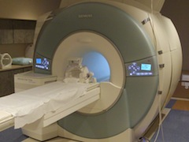

Contact Information

Email
Lab Address
Raizada Lab
Rochester Center for Brain Imaging, Rm 2B201
University of Rochester
430 Elmwood Ave
Rochester, NY 14627
bzinszer@ur.rochester.edu
Social Media
- ResearchGate - usually up-to-date database of publications
- Google Scholar - powerful index tool for publications and citations
- LinkedIn - professional networking
- Twitter - announcements (talks, conferences, publications) and occasional interesting links